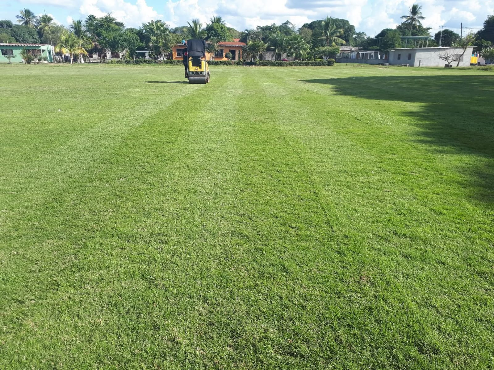
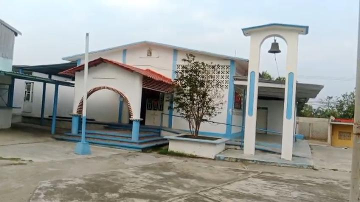

Lugares de Interés
Parque

Es uno de los espacios más queridos y frecuentados por las familias de San Antonio Texas. Por las tardes se llena de vida: niños corriendo, familias platicando y grupos de habitantes que se reúnen para practicar voleibol, que es uno de los deportes más tradicionales y populares de la comunidad. Cuenta con áreas verdes bien cuidadas, bancas para descansar y mucha sombra gracias a los árboles grandes que lo rodean, convirtiéndose en el punto de encuentro ideal para pasar la tarde, convivir con los vecinos y disfrutar de un ambiente tranquilo y seguro.
Campo Deportivo

Es el corazón deportivo y social de la localidad. Cuenta con instalaciones amplias donde los jóvenes, alumnos de la secundaria y del bachillerato practican y juegan partidos de fútbol casi todos los días. Además, es tan reconocido por sus buenas condiciones que llegan visitantes de comunidades cercanas como Los Naranjos y Tres Valles para jugar torneos y encuentros de béisbol, un deporte con mucha tradición en la zona. Pero no solo es para deporte: este espacio también se utiliza para eventos especiales, como jaripeos tradicionales, fiestas de cumpleaños grandes, reuniones familiares y celebraciones de fechas importantes para todo el pueblo.
La Iglesia

Es el edificio más representativo y con mayor valor histórico y cultural de San Antonio Texas. Su construcción y arquitectura son parte de la identidad del lugar, y ha sido testigo de generaciones de historia. Aquí se realizan las misas dominicales y todas las celebraciones religiosas importantes del calendario, como fiestas patronales, procesiones, bodas, bautizos y primeras comuniones. Es el centro espiritual de la comunidad, un lugar de fe, encuentro y tradición donde los habitantes se reúnen para compartir su cultura y sus creencias, manteniendo vivas las costumbres que han pasado de padres a hijos.